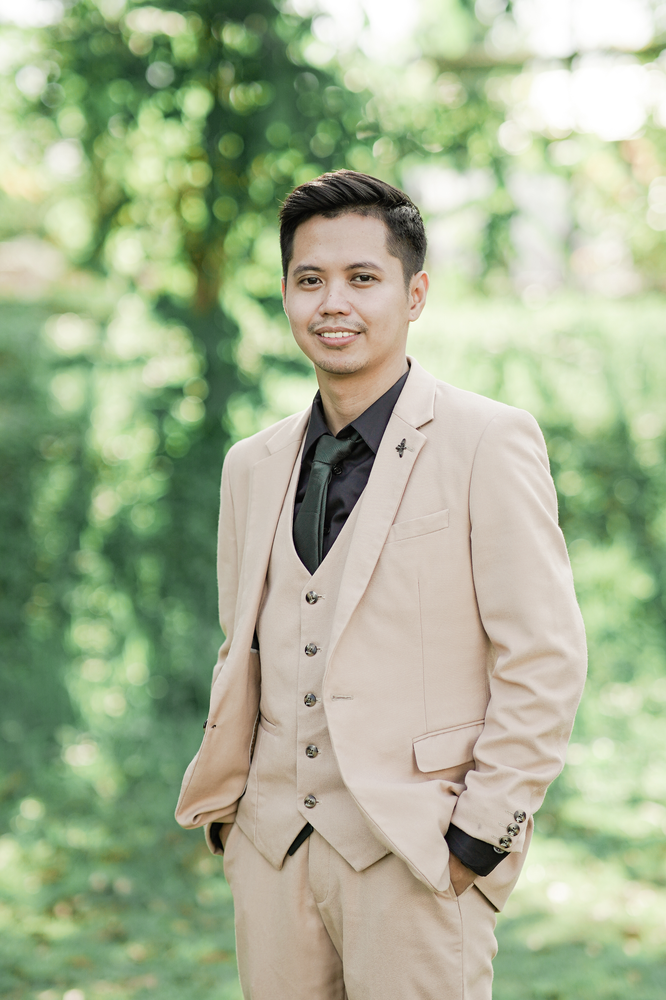

James Ugdang
Quality Assurance Tester
About Me
I am James Ugdang, an aspiring software tester currently enrolled in the Information Technology: Quality Assurance program at NBCC. I am set to graduate in June. I was inspired to become a Software Tester because I was driven by a passion for ensuring seamless user experiences and delivering high-quality software. I was a former Quality Manager in Data Annotation at Scale, a company that focused on developing high-quality Self-Driving Cars. Still, now I have changed my career to Software Testing to broaden my knowledge of Software and apply my experience in a more engaging and impactful way.

Skills
- Manual Testing: Proficient in executing manual test cases to uncover software defects and ensure functionality aligns with requirements.
- Automation Tools: Knowledge of tools like Selenium IDE to streamline and optimize testing processes.
- Test Documentation: Skilled in creating and reviewing test cases, test plans, and test reports.
- Defect Management: Experienced in defect logging and tracking to support efficient resolution.
- SQL: Understanding of SQL for verifying data integrity and back-end functionality.
- Peer Review: Familiar with reviewing test cases and documents to ensure quality standards are met.
- Waterfall Methodology: Hands-on experience with structured development processes.
- Communication: Adept at status reporting and collaborating with team members and stakeholders.
Interests
- Software Quality Assurance: Passionate about identifying areas of improvement in software and ensuring optimal functionality.
- Technology Trends: Eager to learn about the latest testing tools, frameworks, and methodologies.
- Problem Solving: Enthusiastic about tackling challenges and contributing to innovative solutions.
- Professional Growth: Committed to advancing my skills in both manual and automated testing.
Brief Bio
I bring a unique combination of analytical thinking, technical skills, and a collaborative mindset to every project I undertake. Currently, I am working on building a professional portfolio that showcases my expertise in testing processes, project management, and quality assurance methodologies. Outside of my technical pursuits, I enjoy staying updated on IT trends and honing my communication skills.
To learn more or discuss how I can contribute to your team, feel free to connect with me. Here is my LinkedIn profile!!
Home
About Me
Projects
Contact